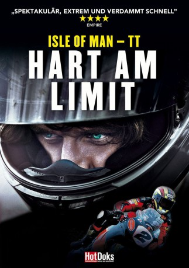

#3278 Isle of Man - TT - Hart am Limit
Alternativ: TT3D: Closer to the Edge (Originaltitel)
 
 IMDB-Wertung: 8.0 / 10
IMDB-Wertung: 8.0 / 10  Metascore: 0
Metascore: 0 
"Isle of Man Tourist Trophy" - das ist Musik in den Ohren eines jeden echten Motorrad-Fans. Eines der ältesten und gefährlichsten Straßenrennen der Welt verwandelt jedes Jahr für zwei Wochen die beschauliche Isle of Man in einen Hexenkessel aus qualmendem Gummi, röhrenden Maschinen und enthusiastischen Fans. Mit mehr als 200 kmh rasen die Fahrer über die kurvenreichen Landstraßen und durch die engen Dörfchen. Über 230 Tote hat das Rennen seit seiner Gründung 1907 bereits gefordert. In faszinierenden Bildern wird nicht nur das Renngefühl hautnah eingefangen, sondern auch einen spannenden Einblick in das Leben der Männer gewährt, die für ihre Leidenschaft manchmal einen hohen Preis zahlen.
Jahr: 2011
Dauer: 103 Minuten
FSK: 12
Land: England Studio: Ascot Elite Entertainment GroupTonspuren: DTS - ,
Untertitel:
Auflösung: 720p (1280x688) Größe: 5017 MB
Genre: Dokumentation, Sport
Regisseur: Richard De Aragues
Drehbuch:
Soundtrack: Andy Gray
Darsteller:
- Roy Moore als Radio Commentator
- Guy Martin als Himself
- Ian Hutchinson als Himself
- John McGuinness als Himself
- Michael Dunlop als Himself
- Keith Amor als Himself
- Bruce Anstey als Himself
- John Barton als Himself
- Paul Dobbs als Himself
- Cameron Donald als Himself
- Ryan Farquhar als Himself
- Dave Hewson als Himself
- Gary Johnson als Himself
- Mark Miller als Himself
- Dan Sayle and Klaus Klaffenbock als Himself
- Jenny Tinmouth als Herself
- Paul Aston Jones als Himself
- Ian Beech als Himself
- Eadlin & Hillberry Dobbs Bridget als Themselves
- Loris Capirossi als Himself
- Wilson Craig als Himself
- Stephen Davison als Himself
- Johnny Ellis als Himself
- Phil McCallen als Radio Commentator
- Danny Horne als Himself
- Steve Parish als Radio Commentator
- John Kennaugh als Himself
- Kate Lancaster als Herself
- Ian Martin als Himself
- Rita Martin als Herself
- Chris Mehew als Himself
- Ian Moffitt als Himself
- Paul Owen als Himself
- Jim Packer als Himself
- Richard Quayle aka Milky als Himself
- Carl Roberts als Himself
- Alastar Russel als Himself
- Cameron Whitworth als Himself
- Mark Woodage aka Brains als Himself
- David Christian als Radio Commentator
- Tim Glover als Radio Commentator
- Chris Kinley als Radio Commentator
- Charlie Lambert als Radio Commentator
Datei: X:\Dokumentationen\Sport\Isle of Man - TT - Hart am Limit (2011, FSK12, 1280x688).mkv seit 03.03.2016
Festplatte: HD Serien(SU-Z)+Dokus+Musik
 Es gibt insgesamt 34 Filme in der Gruppe 'Dokumentationen\Sport'
Es gibt insgesamt 34 Filme in der Gruppe 'Dokumentationen\Sport'